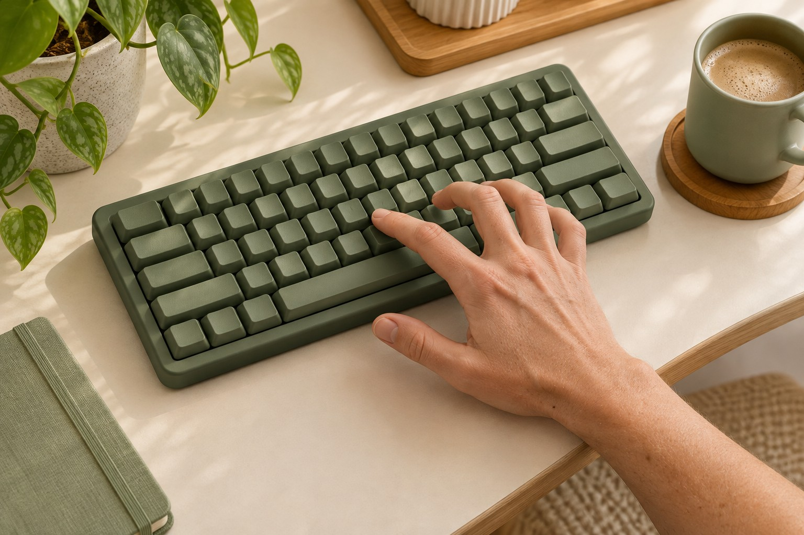
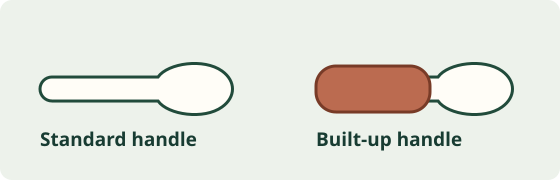
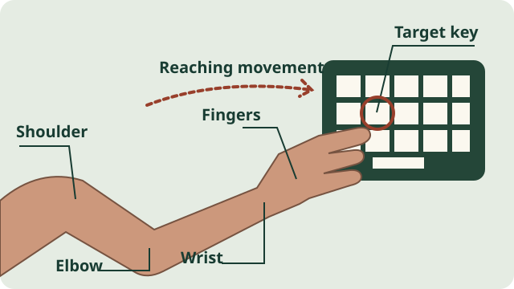
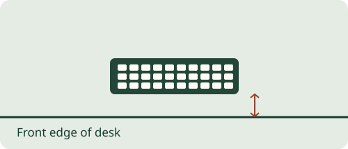

Understand CP
Explain how muscles and the nervous system work together during a reach.
Explore practical typing adaptations for people with one-sided motor difficulties, and discover how rehabilitation engineering can make everyday tasks more accessible.

Erry Mobility is an independent, student-led biomedical engineering education project inspired by lived experience with cerebral palsy.
A world where movement is not a barrier to opportunity.
We use visual lessons and interactive demonstrations to explore human movement and affordable, person-centred adaptations.

Accessibility problem. A long reach and closely spaced keys can make it harder to select the intended key, especially when someone relies on one hand.
Proposed engineering response. Compare the usual keyboard position with a closer position. Keep the keyboard, message and input method the same, then record task time, final text errors and optional comfort. A fitted keyguard is a separate design question.

See how the nervous system helps guide a reach and why reaching demands vary.
See how moving the same keyboard changes the distance to a key.
Compare two setups in a short typing task and review the results.
Explain how muscles and the nervous system work together during a reach.

Explain how a fitted keyguard changes access to individual keys.

Identify one movement demand and a possible adaptation for an everyday task.

Describe how the diameter of a handle changes hand contact.

Identify the base of support in a movement example.

Identify wrist and finger bones and explain how tendons help move the fingers.

Identify a design variable and a measure for comparing two setups.

Explain how moving the same keyboard changes the distance to a key.
Identify an everyday barrier with the people who encounter it.
Describe the task, its constraints and what success would mean.
Choose one variable to change and explain why it matters.
Build a simple model or demonstrate the proposed change.
Compare setups under the same conditions and record the results.
Use observations and user feedback to decide what to change next.
Erry started this project from lived experience with cerebral palsy and one-sided motor difficulties. Everyday tasks such as typing raised a scientific question. How does a change in the tool or setup change what the hand needs to do? Erry Mobility turns that question into visual lessons, practical comparisons and space to record what each person notices.